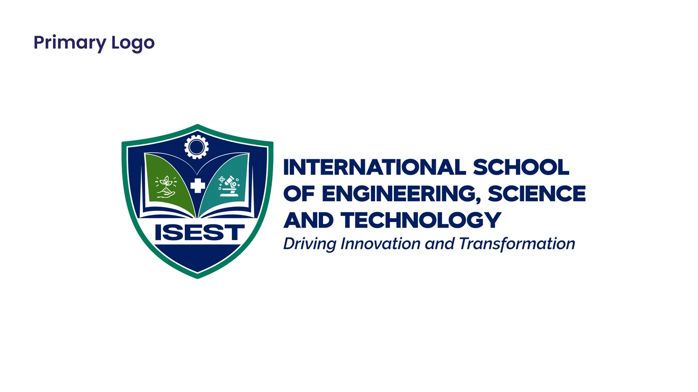

SELECTED WORK / 01
Brand Identity.
Visual identities built to give organisations and ideas a recognisable, consistent voice.
Discuss a similar project ↗
PROJECT 01
09 visualsInternational School of Engineering, Science and Technology (ISEST)
A proposed institutional identity developed around academic excellence, engineering and technological advancement. The presentation covers research, logo construction, visual standards and brand applications.
Selected identity proposalLogo designVisual system
PROJECT 02
08 visualsQUIZ GAB
A personal creative-brand identity covering the logo, colour and typography direction, stationery, business cards and selected brand applications.
Personal brand projectLogo systemCollateral
PROJECT 03
07 visualsKona-U — Property Sales & Rentals
A brand identity for a Cameroonian property sales and rentals platform, built around connection, clarity and the idea of bringing people closer to the spaces they want to call home. The identity brings together a distinctive logo, a coherent visual system and practical brand applications.
Brand identityLogo systemColour & typographyBrand applications
HAVE SOMETHING IN MIND?
Start a conversation ↗